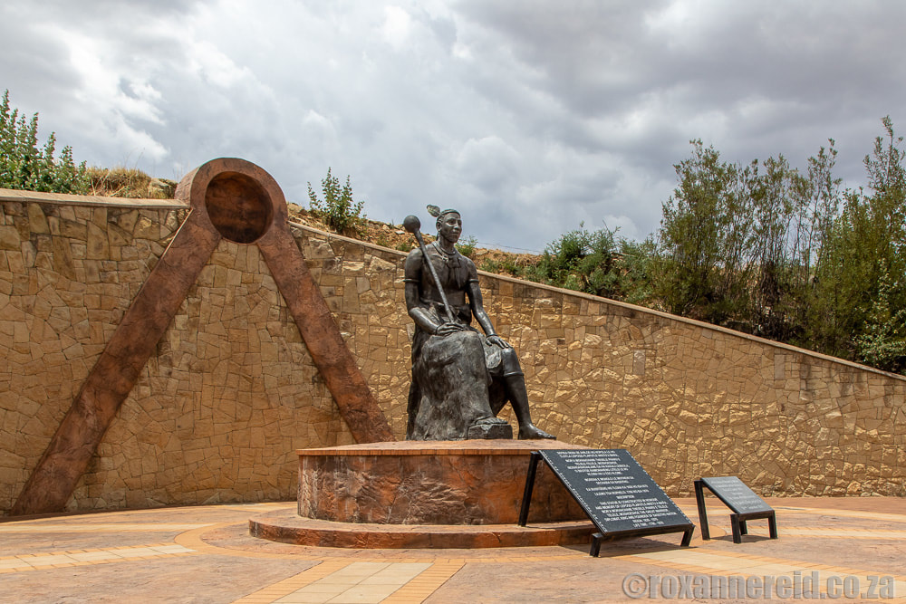

The Moshoeshoe Heritage Walk commemorates King Moshoeshoe I who united different Basotho clans and founded the Basotho nation in the 19th century. The walk takes place around the historic mountain of Thaba Bosiu which was his stronghold.
